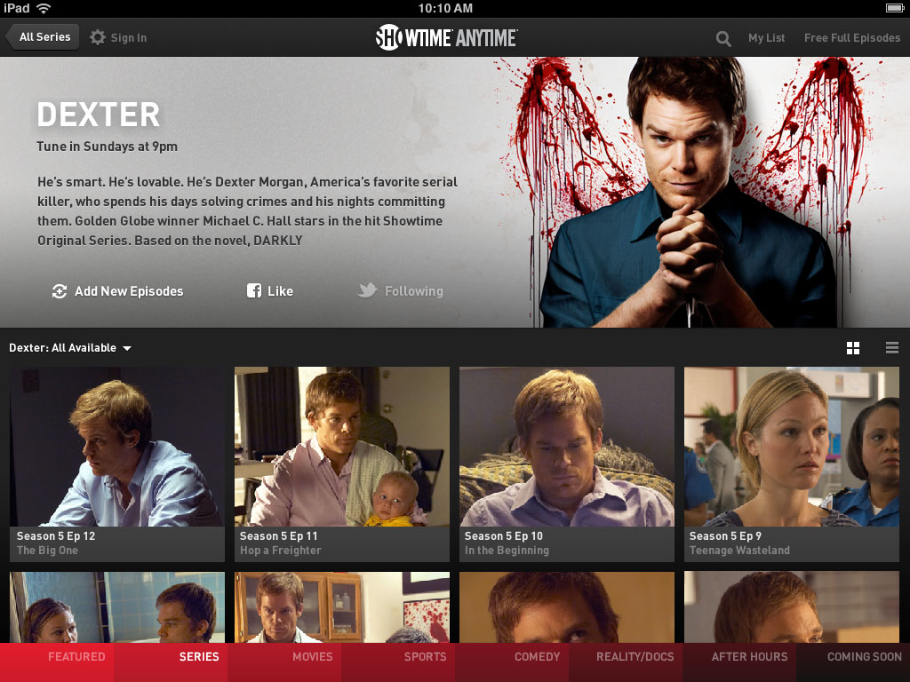

Bigger is Better
iPad App
We started with the iPad, since the larger screen would deliver the best experience for streaming video, and was a natural transition from the web version that was already in development.
There were write-ups on Venture Beat and Tech Crunch about the launch of the ipad app.


